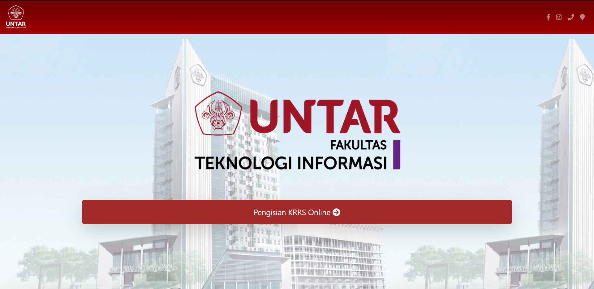
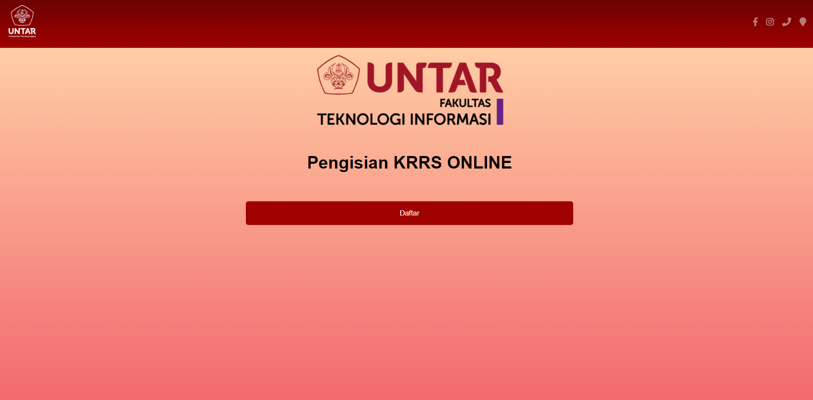
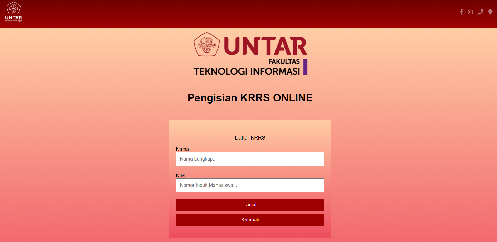
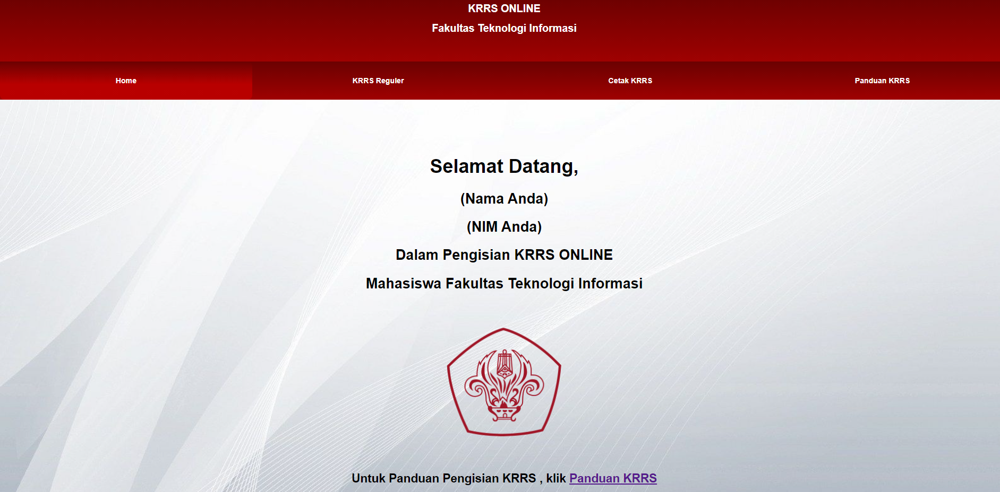
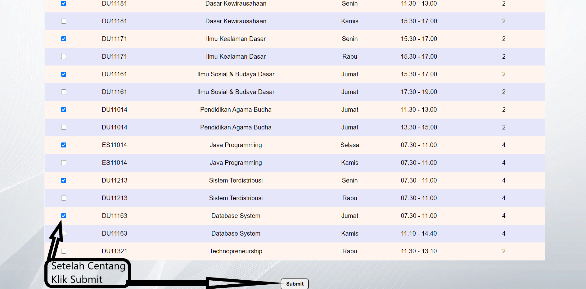
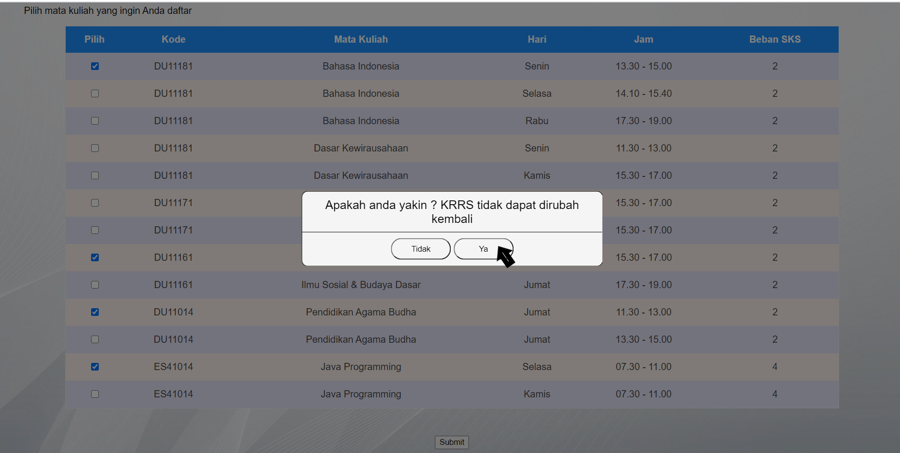
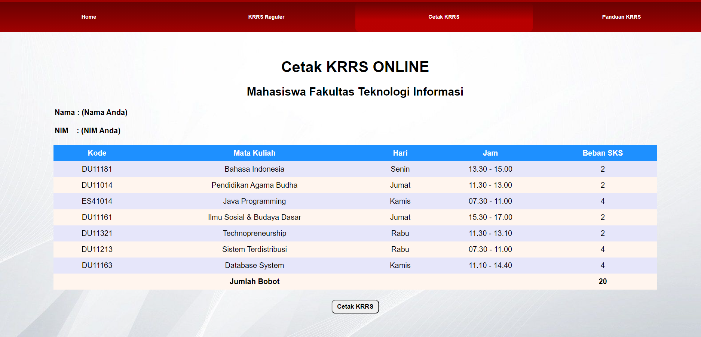

Prosedur Pengisian KRRS Online
1. Kunjungi Situs KRRS Mahasiswa FTI Untar
2. Klik pada menu "Pengisian KRRS Online"
3. Kemudian klik menu "Daftar"
4. Anda akan diarahkan untuk mengisi "Nama Lengkap Dan Nomor Induk Mahasiswa"
5. Setelah selesai Mengisi, Klik Menu "Lanjut"
6. Anda akan diarahkan ke tampilan "HOME"
7. Untuk mengisi Mata Kuliah yang di inginkan, klik pada menu "KRRS Reguler"
8. Pilih Matakuliah yang ingin Anda Ambil dengan cara mencentang Kotak di sebelah kiri Kode Mata kuliah
9. Jika sudah yakin dengan jadwal yang sudah dipilih, Klik pada menu "Ya"
10. Setelah itu, jadwal anda sudah tersimpan di Cetak KRRS, untuk mencetak jadwal, klik pada menu "Cetak KRRS"
1. Browser apa yang bisa mendukung dengan baik untuk masuk ke KRRS Online UNTAR?
2. Apa Yang Harus Saya Lakukan Sebelum melakukan pengisian KRRS On‐Line pada program KRS ONLINE UNTAR?
3. Bagaimana dalam pengisian KRRS Online terdapat sistem ERROR (Salah / Lupa Password) ?
4. Apa yang mengakibatkan munculnya Masalah Pada Saat Pengisian KRRS Online ?
TIPS:
5. Bagaimana Cara Melakukan Pengisian KRRS melalui internet (On‐line) ?